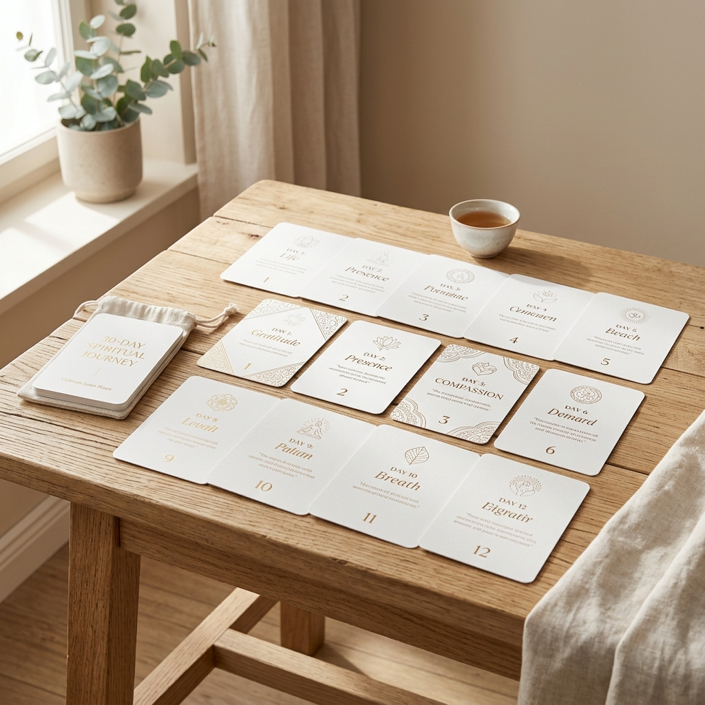

(mesmo que você já tenha tentado antes e parado)
Volte a sentir paz, presença e conexão com Deus em apenas 10 minutos por dia — sem pressão, sem culpa.
👉 Começar minha jornada agoraNão saber que Ele existe.
Sentir mesmo.
Você tenta orar…
mas parece vazio.
Vai na igreja…
mas sai igual entrou.
E no fundo… vem um pensamento que você evita:
Você não se afastou por falta de fé.
Você se afastou porque tentou sozinho.
Paz real.
Você para por alguns minutos…
e sente que Deus tá ali.
Só conexão.
Pagamento único • Acesso imediato
👉 Quero garantir meu acesso
Você recebe acesso imediato a toda a jornada.
Sem enrolação, direto ao ponto.
Algo para você levar para o seu dia.
Palavras que ajudam o seu coração a falar.
Pequenos passos para uma grande mudança.
👉 Você não depende de motivação
👉 Você só segue o fluxo
Se você sair dessa página agora… nada muda.
Você vai continuar: Orando sem sentir, tentando sem conseguir, se culpando em silêncio.
⚠️ Isso pode durar anos.